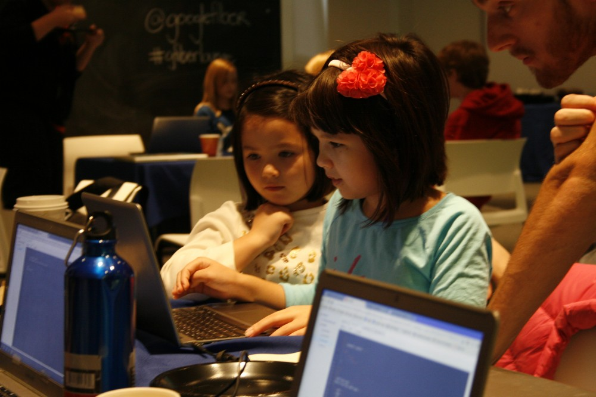
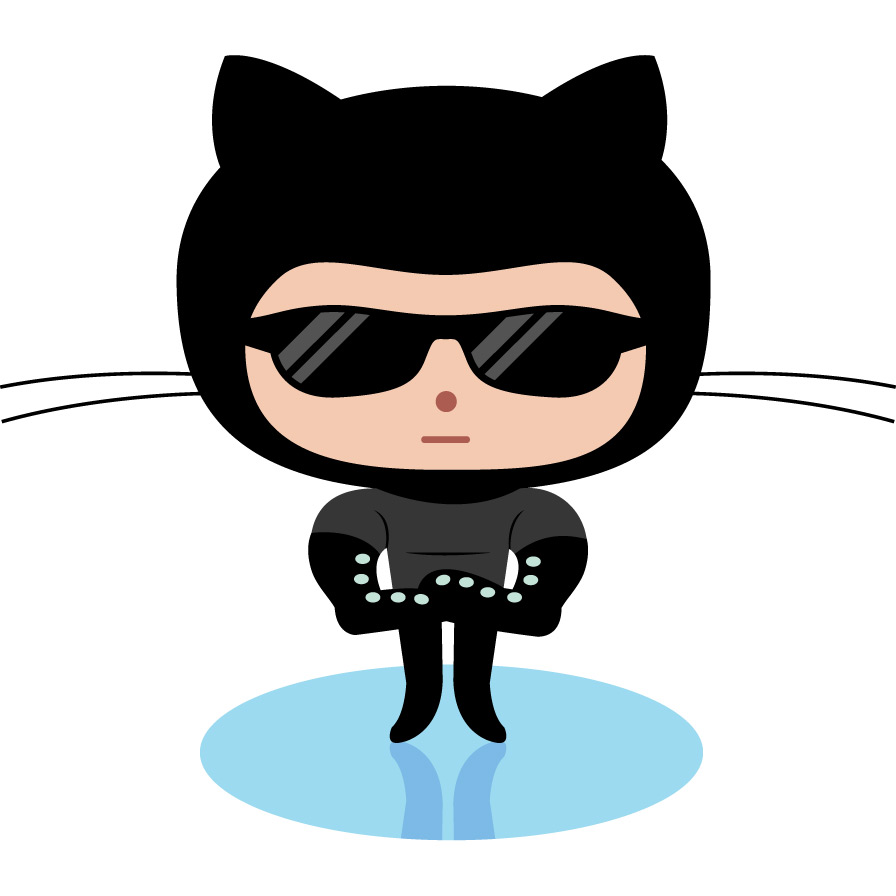

Kansas City Women in Technology is a local networking group whose purpose is to support the growth and retention of women in technology careers. Originally started by a front-end web developer who wanted to find more women programmers like herself, the organization has grown from small networking events into a multi-faceted nonprofit organization. Since its inception in 2013 KCWiT has launched multiple programs for women, girls, and youth to encourage the development of gender-neutrality in the world of programming.
CoderDojo was KCWiT's first program. The founders chose this as the launch program because it was already established internationally, and the CoderDojo international organization offered a plug-and-play curriculum which allowed the founder, Jennifer Wadella and her first volunteers to launch quickly. Google Fiber in Kansas City was one of the first, enthusiastic supporters to sign on, offering up their public meeting space for groups of children ages kindergarten through high school to attend Saturday morning workshops, where boys and girls use MIT-developed tool called Scratch to introduce children to the concepts of object oriented programming. On average, 50-75 children attend each monthly session.
Tech Talk is the monthly networking night held specifically for women interested a technical career change to network with women already in technical professions. Although open to men as well, the monthly events do tend to draw a primarily feminine crowd. Networking events in 2016 have taken on a new flavor, with the introduction of a book club, documentary viewings like CodeGirls, and team building exercises like an evening at Breakout KC.
Coding & Cupcakes is an introduction to programming in a mother-daughter setting. It gives mothers and daughters a mutual opportunity to develop an online cupcake store, where the girls can design, price, market and 'publish' their own products. It is generally a 3-hour, one-time session. If girls enjoy this introductory coding experience and want to continue, they can join Coder Dojo classes. Coding & Cupcakes attendees are treated to a feminine-friendly atmosphere and cupcake treats courtesy of local bakery BabyCakes. Last year, local public radio station KCUR highlighted the program on a morning segment:
Coding and Cupcakes is a mother-daughter learn-to-code event put on by a group called Kansas City Women in Tech. By the end of the day, a lot of the girls say they'd consider a job in the tech world when they grow up. " I think it's pretty fun," says Carlgren. "It's a little bit hard for me, but I think I can get better at it." If these girls do decide to pursue tech, they're in the right place. Kansas City was recently ranked the second best city for women in technology by financial data firm SmartAsset. Jennifer Wadella, the founder of Kansas City Women in Tech, isn't surprised. Listen to the complete article here
Coding & Cocktails is an outgrowth of Coding & Cupcakes. Some mothers, intrigued by the web site development their daughters were doing, asked for their own opportunity to try it out. The program was born in April 2015, and the first session boasted 25 women and more than half a dozen mentors. In 2016 Coding & Cocktails re-launched as a year-long series of monthly coding sessions designed for beginners and dabblers to introduce women to front-end web development in a safe and non-judgmental environment. The program relies on volunteer mentors who are women already in programming careers or who have some education in programming. It owes its success in part to a very low mentor-to-student ratio that allows women to receive individualized attention and assistance during the monthly workshops.
| Mentors List | ||||||
|---|---|---|---|---|---|---|
| Name & Photo | Expertise | Name & Photo | Expertise | |||
 |
Heins, Sarah | Python |  |
Duitsman, Sarah | JavaScript | |
 |
Williams, Ashley | Python |  | Copeland, Thuy | JavaScript | |
 |
Wadella, Jennifer | JavaScript |  |
Bressette, Sharyl | HTML/CSS/JavaScript | |